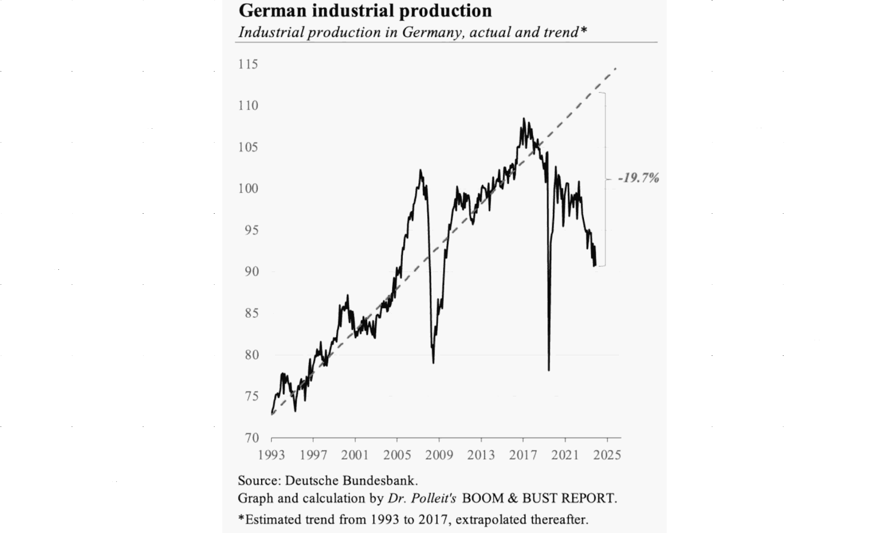

Capire è la chiave di volta
Premessa
Questo articolo è stato scritto componendo due post con lo stesso titolo ma divisi in due parti qui riproposte in una singola narrazione come era stato concepito questo documento fin da principio ma diviso per motivi "editoriali" di piattaforma. A loro volta questo articolo nasce alla luce di alcune considerazioni che hanno portato a scrivere un documento con una prospettiva globale e orientato al futuro mentre questo è limitato alla prospettiva italiana e agli ultimi 30 anni, al massimo dal 1980, in poi. Il paper, che trovate linkato in fondo all'articolo, parla del sogno italiano di diventare la Cina d'Europa, della nostalgia della Lira e come queste due cose sono profondamente interconnesse fra loro ma in modo completamente diverso rispetto alla narrativa mainstream. Che poi è il motivo per la scelta del titolo di questo articolo.Parte #1
A volte pensiamo che sia l'informazione che ci dà un vantaggio asimmetrico tipo: "io so e tu non puoi competere con questo". Ma questa è una beata balla, l'informazione è importante, saperla gestire correttamente è importante, padroneggiare il metodo (scientifico) è fondamentale ma la chiave di volta è sempre "capire". Il termine "capire" è un verbo, non un oggetto o un atto. Spesso viene immaginato con la lampadina che si accende MA quello è solo un momento particolare del capire e talvolta è pure errato. Perchè magari si accende la lampadina ma abbiamo capito "un caxxo". Questa, infatti è la parte più difficile ed è qui che si rivela la fondamentale importanza del metodo scientifico: l'intuizione può anche sbagliare, come la prima impressione. Il termine "capire" è molto simile a "carpire" e infatti la sua origine (etimologia) viene dal latino volgare "capĕre" che significava "prendere". Questo ci spiega perché sia così facile confondere l'intelligenza che "capisce" le cose dalla furbizia che "carpisce" le cose. Se io ti prendo un mela, tu rimani senza la mela. Se io condivido con te un'idea, io non perdo nulla. Ma tu non condividi la tua idea con me perché così pensi di aver "carpito" qualcosa a me e di avere un vantaggio asimmetrico su di me. Spesso, in realtà, non hai capito "un caxxo" e neppure hai capito di non aver capito "un caxxo". In un sistema che funziona sullo spreco è ovvio che la mela la diano a te che la sprechi. Perché se la danno a me, a forza di darmi mele finisco per doverle ridistribuire avendone in eccesso, non in abbondanza, in eccesso ovvero a schifo proprio. Il problema sorge - non sulla produzione o sul consumo delle mele - ma sulla distribuzione delle mele. Perché chi distribuisce le mele pensa di "costruire" la realtà, invece ne costruisce solo una descrizione della realtà. Però quella descrizione è "importante" per la natura dei "valori" che veicola. Quindi, SE è il parroco che ti dà la mela, tu ami Gesù ma Gesù ti schifa perché a te piacciono le tette. Secondo quello che ti dice il parroco di Gesù. Anche se lui di Gesù non ne sa "un caxxo" e se ne sa qualcosa non ha capito "un caxxo". Oltre al fatto, poi, che la DESCRIZIONE della realtà e i valori che veicolano con la distribuzione delle mele sono strutturati in maniera che rimani comunque povero, drogato di mele, affamato di tette e pure peccatore. Non mi credi?Parte #2
Quando vi dicono che è colpa dell'euro, mostrate loro questo grafico (in cima).L'Italia come la Cina d'Europa: la bufala di Confindustria per abbattere gli stipendi degli Italiani al fine di accantonare il necessario per delocalizzare in paesi in via di sviluppo. John Elkann docet. - lnkd.in/duPmvPmsPoi aggiungiamo pure quanto scritto qui sopra e abbiamo completato il quadro. Si fa per dire. Abbiamo solo cominciato a spiegare il patchwork. Mal comune mezzo gaudio? Hanno fatto lo stesso con i nostri migliori clienti, in Germania ma con la green-energy. Pensaci tutto il tempo che ti serve, tanto gli interessi si addizionano in modo composto, se capisci a me.
In Germania
Andamento della produzione in Germania dal 1993 al 2024 con trend storico.
tasto destro per ingrandire in una nuova finestra
Nonostante dopo la pandemia di Covid-19, abbia ripreso il valore precedente, negli ultimi due anni da quando è iniziata la crisi dell'energia a causa della questione Ucraina, ha perso quasi un 1/5 rispetto a quello che era il trend stimato sui dati dei 30 anni prima.
tasto destro per ingrandire in una nuova finestra
Nostalgia canaglia
Quante volte abbiamo sentito in italia lamentele come questa:Ah, quando c'era LEI, la Lira Italiana sempre pronta a svalutare per permetterci di ingigantire il debito pubblico, allora sì che si stava bene e invece l'Euro ci ha rovinato!Ma cosa succederebbe se l'Euro svalutasse (anche solo limitatamente all'Italia) come era solito fare la Lira Italiana? La prossima sezione di questo articolo proverà a dare una risposta concreta a questa domanda, però vi avviso in anticipo, tenetevi forte.

Screenshot del 2 dicembre 2024 - tasto destro per ingrandire in una nuova finestra
110%, introdotto è costato al 31 marzo 2024 qualcosa meno di 129 miliardi.In termini di immediate perdite, ma uno Stato deve sempre considerare un termine di lungo periodo quando investe risorse altrimenti agirebbe come un bottegaio che mira a chiudere la giornata in positivo o un privato che mira a chiudere il trimestre in positivo. D'altronde questa è la ragione essenziale dello Stato, senza la quale non avrebbe ragione di esistere. Provvedere a fornire una pianificazione ed erogazione di determinati servizi che per loro stessa natura e su un arco temporale tale nessun privato vorrebbe fare quel business. É la forma mutualistica alla base dello Stato che gli permette di affrontare questo ruolo. Ma la forma mutualistica, di questo tipo, implica patti generazionali sostenibili e modificati per poi essere adatti ai cambiamenti (cfr. riforme strutturali), pianificazione e ovviamente una classe manageriale pubblica lungimirante. Quando viene a mancare una sola di queste caratteristiche, lo stato non può assolvere al suo compito mutualistico sul lungo. periodo. Se ne mancano due, diventa un gioco in perdita per la società. Se mancano tutte e tre cessa la sua ragione di esistere.
Andamento Italia
Cominciamo con il fare i c.d. conti della serva - cioé quanto è aumentato il costo della vita ovvero quanto potere d'acquisto abbiamo perso - per i quali mi sono avvalso dell'aiuto di ChatGPT per raccogliere e organizzare i dati.1. Inflazione Media Annua (IPCA)
2. Incremento Reale di un Paniere Base (Indice 2018 = 1.00)
Utilizzando l'IPCA per stimare il costo cumulativo:3. Andamento del debito pubblico italiano (2018-2024)
Ecco una sintesi dell'andamento del debito pubblico italiano dal governo Conte I (2018) fino al 2024, con stime basate sui dati disponibili:| Periodo | Debito pubblico (miliardi di euro) | Rapporto debito/PIL (%) |
|---|---|---|
| 2018 (Conte I) | 2.321 | 134,1 |
| 2019 (Conte II) | 2.409 | 134,8 |
| 2020 (Pandemia) | 2.569 | 155,0 |
| 2021 (Draghi) | 2.678 | 150,3 |
| 2022 (Meloni) | 2.768 | 144,4 |
| 2023 | 2.880 | 137,3 |
| 2024 (stima) | Oltre 3.000 | 136,0 (stima) |
4. Conclusione
Se la bilancia commerciale resta invariata o peggiora a causa dei costi energetici, l'aumento del PIL nominale riflette principalmente un fenomeno inflattivo, con poca o nessuna crescita reale. In questo contesto, il rapporto debito/PIL a prezzi costanti risulterebbe più alto rispetto a quello calcolato nominalmente, rendendo l'apparente "riduzione" del debito meno significativa di quanto sembri.L'Euro che svalutò
Quando c'era la Lira si stava meglio, perché la Lira inflazionava, quindi perdeva progressivamente valore d'acquisto, quindi era più facile ripagare il debito pubblico, quindi era più facile aumentare il debito pubblico, quindi i partiti potevano distribuire più prebende e alla fine pareva un mondo perfetto quello in cui le chiacchiere distribuivano i soldi e le tasse le pagavano solo gli operai. Poi entrò nel WTO - l'organizzazione globale del commercio - con il suo marchio CE che significa "China Export" ed praticamente identico al marchio CE che significa "Conformità Europea" a meno di uno spazio in mezzo. Fateci caso, sono diversi per uno spazio in mezzo.
Agnotology
La parola candidata per diventare l'estrema sintesi della società degli ultimi 30 anni.Within the sociology of knowledge, agnotology (formerly agnatology) is the study of deliberate, culturally induced ignorance or doubt, typically to sell a product, influence opinion, or win favour, particularly through the publication of inaccurate or misleading scientific data (disinformation). - Wikipedia, 1992Qualcosa che però non sembra essere così recente ma che va assai indietro nel tempo:
There is a cult of ignorance in the United States, and there has always been. The strain of anti-intellectualism has been a constant thread winding its way through our political and cultural life, nurtured by the false notion that democracy means that my ignorance is just as good as your knowledge. - Isaac Asimov, 1980
Articoli correlati
Share alike
© 2024, Roberto A. Foglietta <roberto.foglietta@gmail.com>, CC BY-NC-ND 4.0